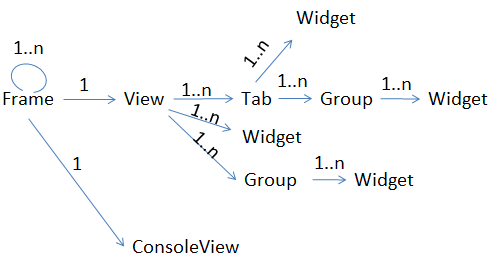

TCCT UI configuration file
The configuration file is an xml file allowing you to reconfigure the layout of the TCCT user interface.
The elements that can be used in the configuration file include Frame, View, Tab, Widget, Group, Console View. The relationship among the elements is shown in the figure below.

- Frame: Specifies the layout of Views. One Frame can have multiple Frames
and one View. It has two attributes:
columns: Specifies the number of columns in this Frame. The default value is one, which means the element in this Frame are organized vertically.
ratio: Specifies the percent of area this Frame occupies in the its mother Frame. The default value is 100%.
<Frame columns="1" ratio="10%"> ... </Frame>
- View: Defines the top level UI object. It can be dragged out, moved and
resized. One Frame has one View. One view can have multiple Tabs, Widgets or Groups. If the
view only contains widgets, the widgets are placed vertically. The Group node is optional. A
View has the following attributes:
title: specifies the name for the view. Default value is view.
isCloseable: specifies whether the view can be closed at run-time. Default value is false.
isFloating: specifies whether the view can be dragged out and resized at runtime. Default value is false.
isStandalone: specifies whether the view can be dragged out and closed. Default value is false.
<View title="Status" isCloseable="false" isFloating ="true" isStandalone = "false"> ... </View>
- Tab: specifies a tab in the View. There can be multiple Tabs in one View.
Multiple tabs will be overlaid on the interface. A tab has the following
attributes:
title: specifies the name for the Tab. Default value is view.
isCloseable: specifies whether the tab can be closed on the interface. Default value is false.
isMoveable: specifies whether the tab can be dragged out and resized on the interface. Default value is false.
<Tab title="Select..." isCloseable="false" isMoveable="true" > ... </Tab>
- Group: defines the layout of widgets. There can be multiple widgets in
one group. If there is only one widget, the group node can be omitted. A Group has the
following attributes:
columns: specifies the number of columns in the Group. The default value is 1, which means the widgets in the group will be organized vertically.
text: specifies the group name. Default value is empty.
<Group columns="2" text="Variables"> ... </Group>
- Widget: specifies the minimum UI object. You can find the provided
widgets for TCCT in Widgets of TCCT.
<widget:LineEntry name="testprogram" displayName="TestProgram:" /> <widget:Connect_Equipment_Widget />
- Console view: specifies a console view. There can only be one console
view in the TCCT. The text data log can be output to the console
view.
<ConsoleView > </ConsoleView>
Example
<TCCT xmlns="http://www.advantest.com/tcct/presentation"
xmlns:widget="http://www.advantest.com/tcct/widgets">
<!--Root Frame Node -->
<Frame columns="1">
<!--Top Panel -->
<Frame columns="1" ratio="10%">
<!--Status View -->
<View title="Status" isCloseable="false" isFloating="false">
<Group columns="3">
<widget:Tester_Status_Widget />
<widget:Equipment_Status_Widget />
<widget:Lot_Status_Widget />
</Group>
</View>
</Frame>
<!--Media Panel -->
<Frame columns="2" ratio="75%">
<!--Left Frame of Media Panel -->
<Frame columns="1" ratio="50%">
<!--Top Frame of Left Frame -->
<Frame columns="1" ratio="16%">
<!--Load Testflow View/Load Recipe View/Connect Equipment View -->
<View>
<Tab title="Select..." isCloseable="false" isFloating="true">
<Group columns="2">
<widget:Load_TF_Widget />
<widget:Load_Recipe_Widget />
</Group>
</Tab>
<Tab title="Equipment">
<Group columns="1">
<widget:Connect_Equipment_Widget />
</Group>
</Tab>
</View>
</Frame>
<!--Middle Frame of left Frame -->
<Frame columns="1" ratio="60%">
<!--Lot Summary View -->
<View title="Lot Information">
<Group>
<widget:LineEntry name="testflow" displayName="TestFlow:" />
<widget:LineEntry name="equipment" displayName="Equipment:" />
<widget:LineEntry name="recipe" displayName="Recipe:" />
<widget:LineEntry name="TC.LOT_ID" displayName="Lot ID:" />
<widget:LineEntry name="TC.OPER_NAM" displayName="Operator Name:" />
<widget:LineEntry name="TC.WAFER_ID" displayName="Wafer Id:" />
<widget:Yield_Widget />
</Group>
</View>
</Frame>
<!--Bottom Frame of Left Frame -->
<Frame columns="1" ratio="24%">
<!--Console View -->
<ConsoleView>
</ConsoleView>
</Frame>
</Frame>
<!--Right Frame of Media Panel -->
<Frame columns="1" ratio="50%">
<!--Top Frame of Right Frame -->
<Frame columns="1" ratio="50%">
<!--binning View -->
<View title="Binning" isFloating="true">
<Group>
<widget:Binning_Widget />
</Group>
</View>
</Frame>
<!--Bottom Frame of Right Frame -->
<Frame columns="1" ratio="50%">
<!--binning statisc View -->
<View title="Binning Statistics" isFloating="true">
<Group>
<widget:Binning_Statistics_Widget />
</Group>
</View>
</Frame>
</Frame>
</Frame>
<!--Bottom Panel -->
<Frame columns="1" ratio="15%">
<!--ControlPanl View -->
<View isStandalone="true">
<Group columns="6">
<Group columns="1">
<widget:Lot_Control_Widget />
</Group>
<Group columns="1">
<widget:Test_Control_Widget />
</Group>
<Group columns="1">
<widget:Retest_Widget />
<widget:Loop_Widget />
</Group>
<Group columns="1">
<widget:Partial_Summary_Widget />
<widget:Datalog_Variables_Widget />
</Group>
<Group columns="1">
<widget:Datalog_File_Control_Widget />
<widget:Contact_Check_Widget />
</Group>
<Group columns="1">
<widget:ContinueOnFail_Widget />
</Group>
</Group>
</View>
</Frame>
</Frame>
</TCCT>The example file configures the TCCT UI as below:

Functional changes
- Introduced in SmarTest 7.2.3
- SmarTest 7.2.3: Changed in TCCT 1.5